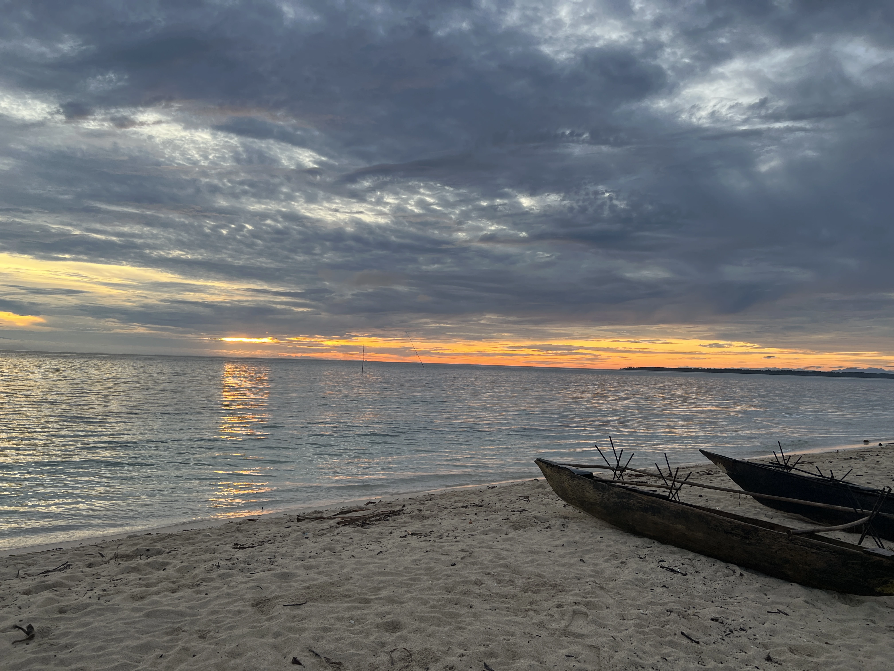
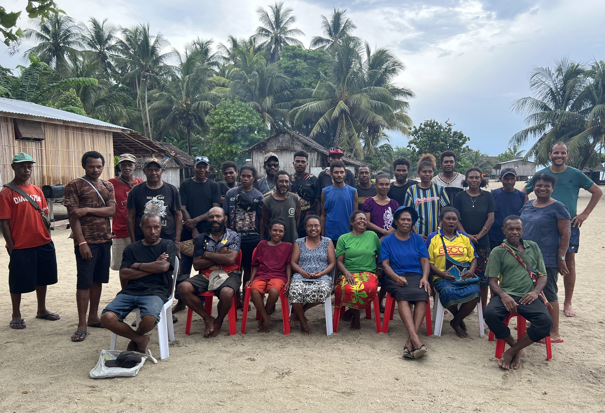
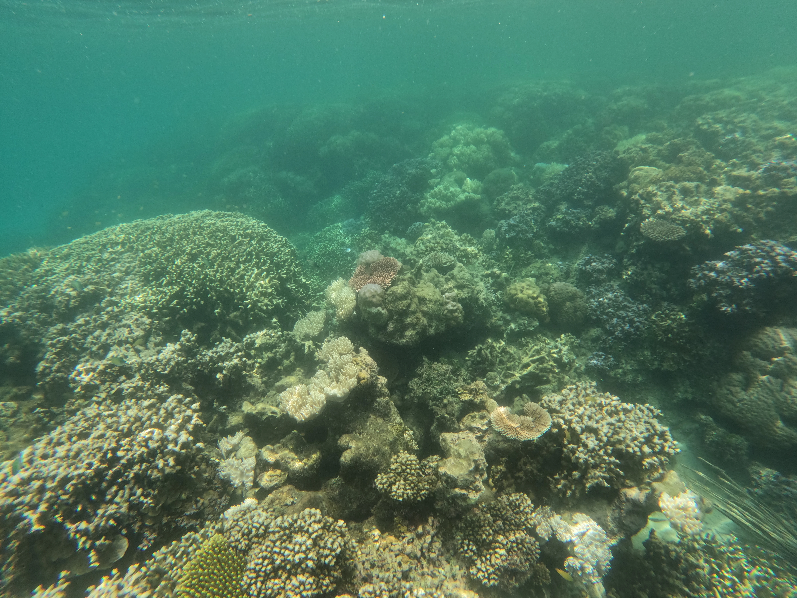

Challenges We Face
Climate change impacts, sea level rise, coral reef destruction, population pressure, and limited access to services are threatening ecosystems and livelihoods across Cape Vogel communities.

Community-led conservation across Cape Vogel Peninsula
View Our WorkThe Cape Vogel Conservation Initiative, founded in November 2025, is a community-led organisation working to address environmental degradation and climate change across the Cape Vogel Peninsula.
Our core team consists of dedicated community leaders supported by technical advisors, alongside working groups and a council of elders who guide our initiatives through traditional knowledge and leadership.
We take a grassroots approach—working one village at a time, one language at a time—with the goal of engaging all 25 communities across Cape Vogel in conservation and sustainable development programmes within five years.
By combining local knowledge with modern conservation practices, we aim to protect biodiversity, strengthen communities, and ensure a sustainable future for our people, land, and sea.


Climate change impacts, sea level rise, coral reef destruction, population pressure, and limited access to services are threatening ecosystems and livelihoods across Cape Vogel communities.
Protect biodiversity and cultural ecosystems
Restore degraded forests and reefs
Support community growth and wellbeing
Empower youth and local leadership
Restoring forest ecosystems and biodiversity
Protecting coastal ecosystems and livelihoods
Rehabilitation and marine conservation efforts
Cape Vogel Peninsula lies between the d’Entrecasteaux Islands in the east, the Owen Stanley Ranges in the west, Collingwood Bay in the north, and Goodenough Bay in the south.
The region features diverse ecosystems including mangrove forests, coral reefs, limestone plateaus, and fertile valleys that support biodiversity and sustain local communities.
View on Google Maps